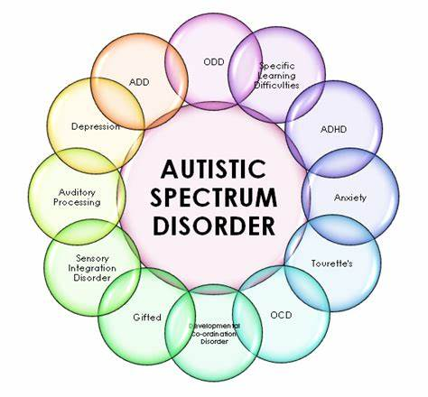
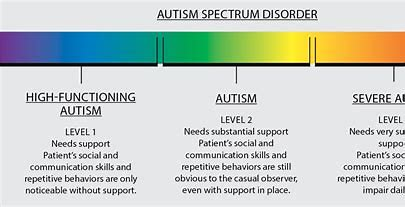

Symptoms of Autism Spectrum Disorder
Some children show signs of autism spectrum disorder in early infancy, such as reduced eye contact, lack of response to their name or indifference to caregivers. Other children may develop normally for the first few months or years of life, but then suddenly become withdrawn or aggressive or lose language skills they've already acquired. Signs usually are seen by age 2 years.

Each child with autism spectrum disorder is likely to have a unique pattern of behavior and level of severity — from low functioning to high functioning.
Social communication and interaction
A child or adult with autism spectrum disorder may have problems with social interaction and communication skills, including any of these signs:
- Fails to respond to his or her name or appears not to hear you at times
- Resists cuddling and holding, and seems to prefer playing alone, retreating into his or her own world
- Has poor eye contact and lacks facial expression
- Doesn't speak or has delayed speech, or loses previous ability to say words or sentences
- Can't start a conversation or keep one going, or only starts one to make requests or label items
- Speaks with an abnormal tone or rhythm and may use a singsong voice or robot-like speech
- Repeats words or phrases verbatim, but doesn't understand how to use them
- Doesn't appear to understand simple questions or directions
- Doesn't express emotions or feelings and appears unaware of others' feelings
- Doesn't point at or bring objects to share interest
- Inappropriately approaches a social interaction by being passive, aggressive or disruptive
- Has difficulty recognizing nonverbal cues, such as interpreting other people's facial expressions, body postures or tone of voice
Patterns of behavior

A child or adult with autism spectrum disorder may have limited, repetitive patterns of behavior, interests or activities, including any of these signs:
- Performs repetitive movements, such as rocking, spinning or hand flapping
- Performs activities that could cause self-harm, such as biting or head-banging
- Develops specific routines or rituals and becomes disturbed at the slightest change
- Has problems with coordination or has odd movement patterns, such as clumsiness or walking on toes, and has odd, stiff or exaggerated body language
- Is fascinated by details of an object, such as the spinning wheels of a toy car, but doesn't understand the overall purpose or function of the object
- Is unusually sensitive to light, sound or touch, yet may be indifferent to pain or temperature
- Doesn't engage in imitative or make-believe play
- Fixates on an object or activity with abnormal intensity or focus
- Has specific food preferences, such as eating only a few foods, or refusing foods with a certain texture
As they mature, some children with autism spectrum disorder become more engaged with others and show fewer disturbances in behavior. Some, usually those with the least severe problems, eventually may lead normal or near-normal lives. Others, however, continue to have difficulty with language or social skills, and the teen years can bring worse behavioral and emotional problems.
When to see a doctor
Babies develop at their own pace, and many don't follow exact timelines found in some parenting books. But children with autism spectrum disorder usually show some signs of delayed development before age 2 years.
If you're concerned about your child's development or you suspect that your child may have autism spectrum disorder, discuss your concerns with your doctor. The symptoms associated with the disorder can also be linked with other developmental disorders.
Signs of autism spectrum disorder often appear early in development when there are obvious delays in language skills and social interactions. Your doctor may recommend developmental tests to identify if your child has delays in cognitive, language and social skills, if your child:
- Doesn't respond with a smile or happy expression by 6 months
- Doesn't mimic sounds or facial expressions by 9 months
- Doesn't babble or coo by 12 months
- Doesn't gesture — such as point or wave — by 14 months
- Doesn't say single words by 16 months
- Doesn't play "make-believe" or pretend by 18 months
- Doesn't say two-word phrases by 24 months
- Loses language skills or social skills at any age